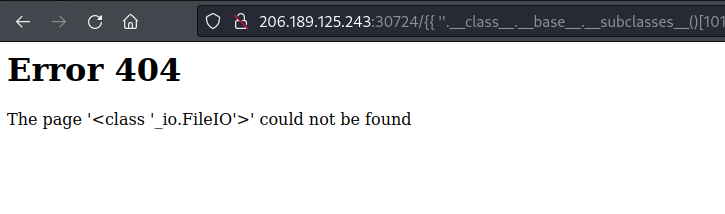
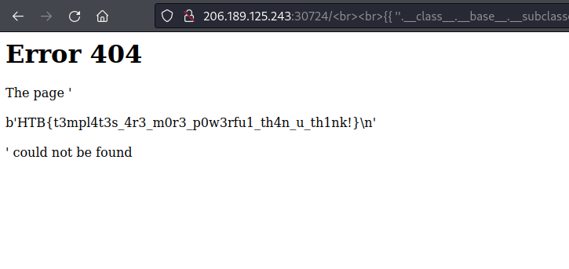

| site | Hack the Box |
| url | https://app.hackthebox.com/challenges/templated |
| discussion | https://forum.hackthebox.com/t/official-templated-discussion |
| type | challenge/web |
| difficulty | easy |
| startdate | 2022-08-08 |
| enddate | 2022-08-08 |
Can you exploit this simple mistake?
We receive an IP and port to a server. When we access the server using a web browser, we see an 'under construction' site. The technology used is displayed (Flask/Jinja2), but no other infos can be found on this site:

A web search for "flask jinja2 vulnerability" points us in the right direction: under the right conditions, a Server Side Template Injection (SSTI) is possible. Often, this is done by changing the value passed to a HTTP GET parameter. In this case we cannot identify such parameters.
We decide to scan for additional files and folders using gobuster. However, we discover quickly that the server returns a status code 200 even for all pages, even for pages that do not exist. This makes it impossible to use gobuster in this situation.
While investigating this behaviour, we notice that the error page contains the name of the page we tried to open. The usage of the non-standard <str> tag and the newlines around the name make us think that this string was included by the Flask/Jinja2 template:
We decide to test whether an SSTI is possible by inserting the following Jinja2 placeholder:
{{ 42+5 }}
The response is promising:

We decide to follow the article found earlier and start navigating the chain of Python objects starting with an empty string:
{{ ''.__class__ }}
This is working and we continue following the chain of objects. The only difficult part is finding out the correct index of the class _io._IOBase (it is 101). Finally, we find the _io.FileIO class using the string:
{{ ''.__class__.__base__.__subclasses__()[101].__subclasses__()[0].__subclasses__()[0] }}

We can now use this string like the Python class io.FileIO described under [2]. Calling this class with a file path returns a io.BufferedReader object. Calling its read() method returns the file's contents:
{{ ''.__class__.__base__.__subclasses__()[101].__subclasses__()[0].__subclasses__()[0]('flag.txt').read() }}

This gives us the flag:
HTB{t3mpl4t3s_4r3_m0r3_p0w3rfu1_th4n_u_th1nk!}